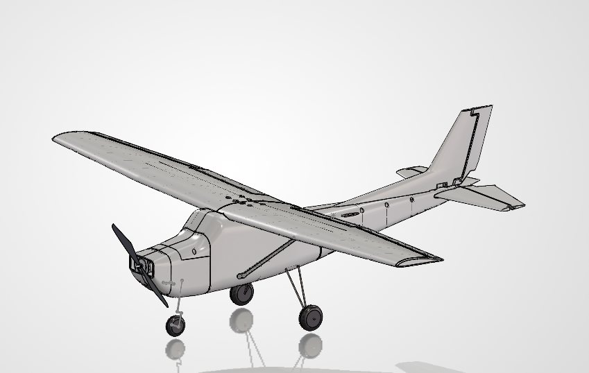
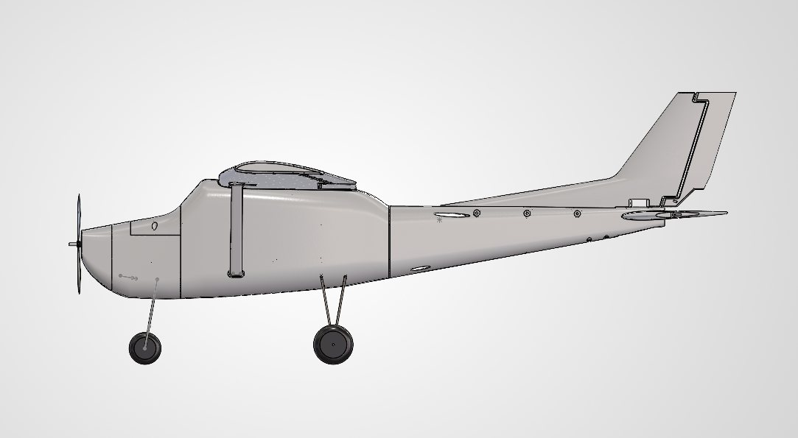
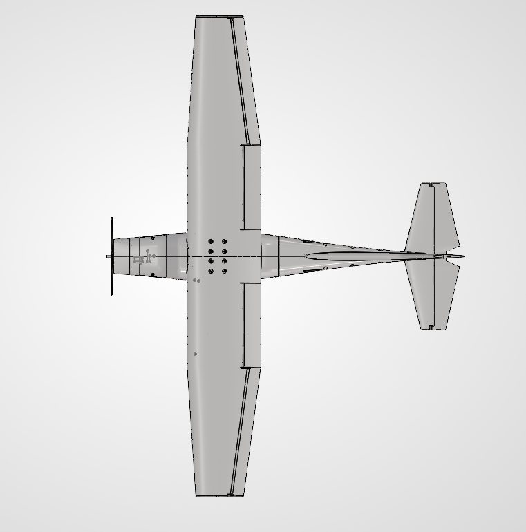
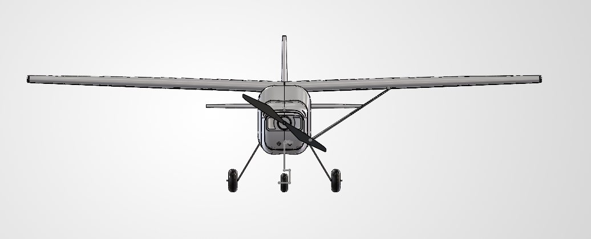

RC Cessna 172, 3D-Printed Flying Model
- Scale
- 1:8
- Span
- 1.42 m
- AUW
- 3.6 kg
- Battery
- 4S LiPo
Designed and fabricated with spiral-vase PETG wings and a three-piece fuselage. Flight-tested; the short endurance traced back to high structural weight.
Interactive model
Loading 3D model…
Drag to rotate, scroll or pinch to zoom, right-drag or two fingers to pan. Two section sliders cut the model, and only one works at a time: moving one switches the other off. The cross-section starts at the nose and moves toward the tail. The side section is parallel to the right plane, starts at the left wingtip and moves across to the right, with the centreline halfway along the slider. 0 mm is no cut and the cut face is shaded blue-grey. Isometric shows both cuts, Front suits the cross-section and Side suits the side section.
CAD views



